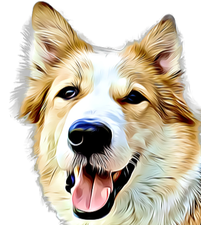

<ion-app>
  <ion-menu side="start" contentId="content">
    <ion-header>
      <ion-toolbar color="primary">
        <ion-title>Mimbo</ion-title>
        <ion-thumbnail class="logo-thumbnail" slot="start">
          
        </ion-thumbnail>
      </ion-toolbar>
    </ion-header>

    <ion-content color="primary">
      <ion-menu-toggle>
        <ion-item lines="none" color="primary" routerLink="home">
          <ion-icon name="paw-outline" slot="start"></ion-icon>
          <ion-label>Doggos Around The World</ion-label>
        </ion-item>
      </ion-menu-toggle>
      <ion-menu-toggle>
        <ion-item lines="none" color="primary" routerLink="breeds-info">
          <ion-icon name="newspaper-outline" slot="start"></ion-icon>
          <ion-label>Dog Breeds Info</ion-label>
        </ion-item>
      </ion-menu-toggle>
      <ion-menu-toggle>
        <ion-item lines="none" color="primary" routerLink="edible">
          <ion-icon name="pizza-outline" slot="start"></ion-icon>
          <ion-label>Can Pups Eat It?</ion-label>
        </ion-item>
      </ion-menu-toggle>
      <ion-menu-toggle>
        <ion-item lines="none" color="primary">
          <ion-icon name="alarm-outline" slot="start"></ion-icon>
          <ion-label>Appointments & Reminders</ion-label>
        </ion-item>
      </ion-menu-toggle>
      <ion-menu-toggle>
        <ion-item lines="none" color="primary" routerLink="vets-near-by">
          <ion-icon name="search-outline" slot="start"></ion-icon>
          <ion-label>Vets Near Me</ion-label>
        </ion-item>
      </ion-menu-toggle>
      <ion-menu-toggle>
        <ion-item lines="none" color="primary" routerLink="body-language">
          <ion-icon name="help-circle-outline" slot="start"></ion-icon>
          <ion-label>Dog Body Language</ion-label>
        </ion-item>
      </ion-menu-toggle>
      <ion-menu-toggle>
        <ion-item lines="none" color="primary" routerLink="training-tools">
          <ion-icon name="hammer-outline" slot="start"></ion-icon>
          <ion-label>Training Tools</ion-label>
        </ion-item>
      </ion-menu-toggle>
    </ion-content>
  </ion-menu>
  <ion-router-outlet main id="content"></ion-router-outlet>
</ion-app>
